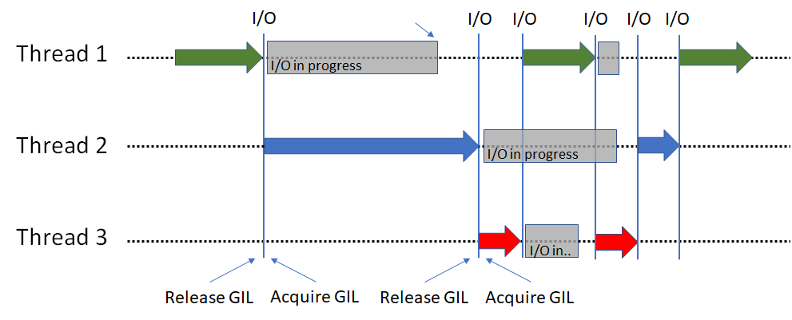

IO intensive --> Concurrent --> Use Threads
Python threads are only useful when functions take a long time because of IO (releases the GIL) Python threads are real system threads but parallel execution is forbidden because of GIL.

Example of functions that releases the GIL: - Downloading - requesting an URL - opening a file...
Python libraries that releases the GIL:
- requsets
- numpy
- faiss
- time.sleep(3) is not equivalent to a loop running for 3 seconds, burning CPU cycles while holding the GIL lock. The thread is switched away from for 3 seconds, allowing other threads to run. https://stackoverflow.com/a/61809931
http://www.dabeaz.com/python/UnderstandingGIL.pdf
CPU instensive --> Parallel --> use Multiprocessing
Conclusion
asyncio |
threading |
multiprocessing |
|
|---|---|---|---|
| Great for | Concurrency | Concurrency | Parallelism |
_-_-_-_- |
_-_-_-_- |
==== |
|
| Great for | IO intensive | IO intensive | CPU instensive |
| swithing is controled by | Program | OS | OS |
| Access to same objects | Yes | Yes | No, IPC is needed |
https://superfastpython.com/learning-paths/
from threading import Thread
def worker():
"""thread worker function"""
print('Worker')
t = Thread(target=worker)
t.start()
Producer & consumer in parallel -> queue
# SuperFastPython.com
# example of using the queue with processes
from time import sleep
from random import random
from multiprocessing import Process, Queue
# generate work
def producer(queue):
print('Producer: Running', flush=True)
# generate work
for i in range(10):
# generate a value
value = random()
# block
sleep(value)
# add to the queue
queue.put(value)
# all done
queue.put(None)
print('Producer: Done', flush=True)
# consume work
def consumer(queue):
print('Consumer: Running', flush=True)
# consume work
while True:
# get a unit of work
item = queue.get()
# check for stop
if item is None:
break
# report
print(f'>got {item}', flush=True)
# all done
print('Consumer: Done', flush=True)
# entry point
if __name__ == '__main__':
# create the shared queue
queue = Queue(maxsize=50)
# start the consumer
consumer_process = Process(target=consumer, args=(queue,))
consumer_process.start()
# start the producer
producer_process = Process(target=producer, args=(queue,))
producer_process.start()
# wait for all processes to finish
producer_process.join()
consumer_process.join()